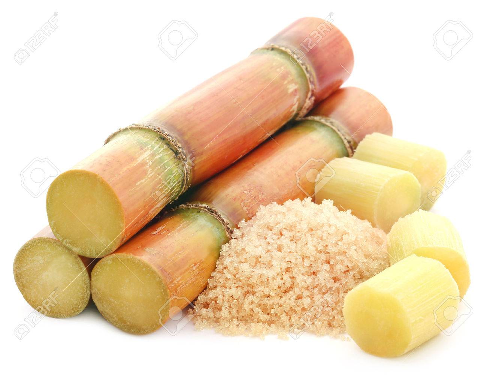
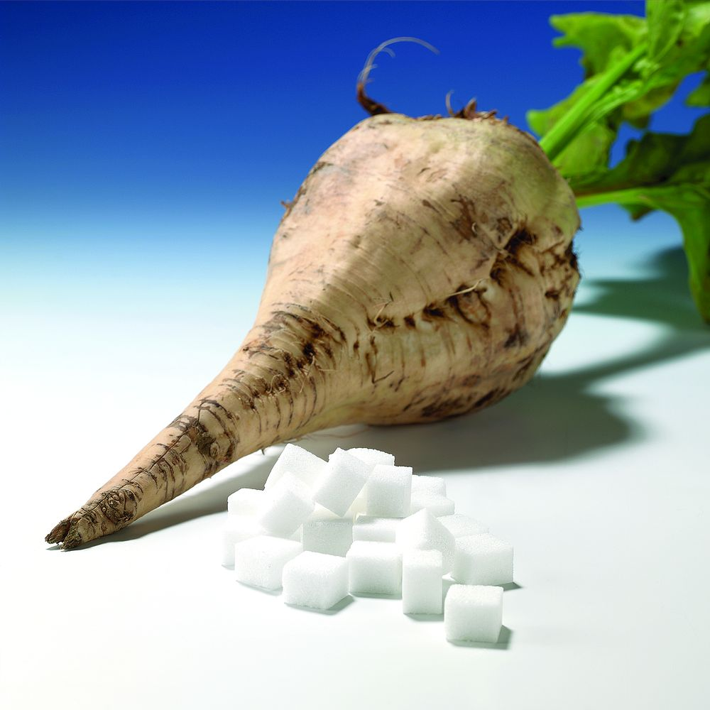
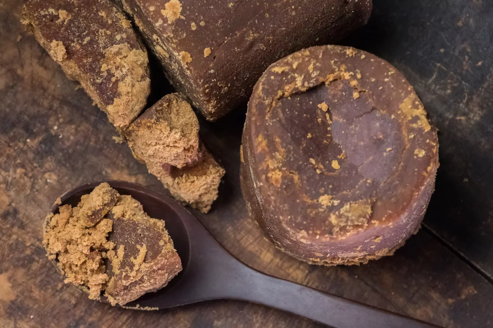

Pour plus d'information sur le Sucre, cliquer ici:
Le terme « sucre » vient probablement du sanskrit « çârkara » (signifiant « gravier » ou « sable »).
Le sucre est une substance de saveur douce extraite principalement de la canne à sucre et de la betterave sucrière. Le sucre est une molécule de saccharose (glucose + fructose). Il est également possible d'obtenir du sucre à partir d'autres plantes. Toutefois, d'autres composés de la même famille des saccharides ont également une saveur douce : le glucose, le fructose… qui sont de plus en plus utilisés par l'industrie agroalimentaire et dans d'autres secteurs.
Sur un étiquetage nutritionnel, l'information dont sucres, située sous la ligne Glucides qu'elle complète, désigne tous les glucides « oses » ayant un pouvoir sucrant, essentiellement le fructose, saccharose, glucose, maltose et lactose. Les autres glucides ayant un pouvoir sucrant sont les « polyols » (sorbitol, maltitol, mannitol) mais ils sont maintenant étiquetés séparément, en tant que « polyalcools », qui sont des glucides et non des sucres.
La canne à sucre contient environ :
La betterave sucrière contient environ :
Pour plus d'information sur le Saccharose, cliquer ici:
| Sucre de canne | L'extraction n'étant pas parfaite, 1 tonne de canne fournira environ 115 kilogrammes de saccharose. Les champs de canne à sucre sont généralement brûlés et les cannes ramassées mécaniquement. Le brûlage sur pied, qui diminue la masse végétale inutile (les feuilles) et concentre le sucre dans la tige par évaporation, est une technique aussi ancienne que la culture de la canne. Cette technique est toutefois abandonnée par certains producteurs afin de réduire la production de CO2 associée à la culture de la canne. |  |
|---|---|---|
| Sucre de betterave | Pour la canne comme pour la betterave, l'extraction doit se faire rapidement car les plantes continuent à respirer et consomment du sucre pour leur métabolisme. En moyenne, on chiffre de 100 à 130 g de sucre perdu par tonne de betterave et par jour. Les usines sucrières sont ainsi toujours à moins de trente kilomètres des champs. Une autre partie du sucre se retrouve dans la mélasse ou reste dans la pulpe. L'obtention du sucre blanc se fait par adjonction de lait de chaux et de gaz carbonique, puis par centrifugation après cristallisation. |  |
| Sucre de palme | De fabrication artisanale, ce sucre est extrait des inflorescences des palmiers à sucre. Le jus obtenu est filtré, puis cuit afin de le transformer en sirop. Il est enfin battu pour amorcer la cristallisation. Le sucre obtenu est brun, naturellement riche en fructose et oligo-éléments. |  |